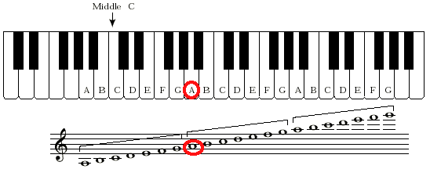
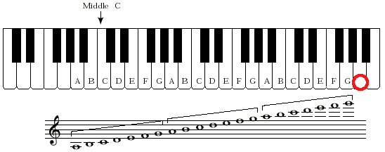
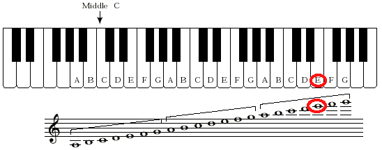
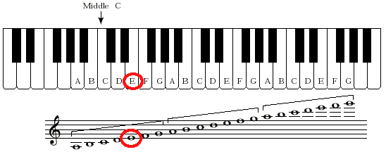
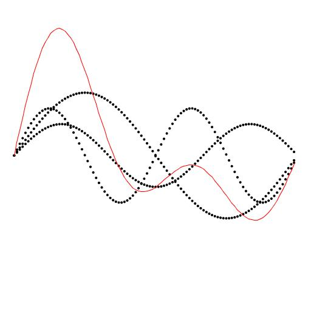
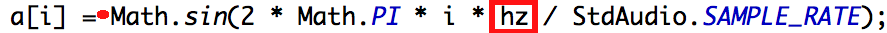

Extension for Module 4:
Extension 4.1: Create an Instrument (6 points)
We have seen how sound can be represented as a summation of sine waves. In this extension, you will process a description of an instrument, which specifies the relative intensities of that instruments overtones. You will modify a copy of PlayThatTune so that the sound emitted for each note has the profile of the specified instrument.
##Warm Up
-
Locate the
instrumentpackage in theextensionsfolder. -
You will find a copy of
PlayThatTunein theinstrumentpackage, credited to Sedgewick's book, as this code is adpated from Sedgewick'sPlayThatTune. -
Run
PlayThatTuneand verify that it plays the music files correctly.
##Overview
- For the purposes of this work, let's define a frequency factor as a multiplicative factor to be applied to a frequency
f:
In the example below, let's assume that f is 440 Hz (cycles per second), which is concert A. On a piano, this is the A above middle C:

-
a factor of
1results in the same frequency asf, because1*f==f. -
a factor of
2yields a frequency an octave higher thanf.
For this example, we obtain 880 Hz, which is the A above high C on a piano:

- a factor of
4yields a frequency two octaves higher thanf.
Here we obtain 1760 Hz, an octave above the A above high C:

- a factor of
3is between one and two octaves higher, and it turns out to be one octave plus a just (or, pure) fifth above the pitch corresponding tof.
Here we obtain the frequency 1320 Hz, which sounds like the E above high C.

The sound is slightly different than on a piano, where the pitches are not perfect but are instead evenly spaced apart from each other. The corresponding note on the piano has a frequency of 1318.51 Hz, slightly flatter than what we get by our frequency factor.
- a factor of
0.75(ratio of 3:4) yields a note that sounds like an E, but dividing by 4 lowers its pitch by two octaves. Withfat concert A, a frequency factor of 3:4 yields a frequency of 330, whichsounds like the E above middle C:

Again, the pitch on a piano is slightly different; in this case it is slightly flatter at 329.63.
-
It is thus convenient to specify a frequency factor as the ratio of two integers. In the above examples we see 1:1, 2:1, 4:1, 3:1, and 3:4.
-
To build an actual instrument, we must pick the frequency factors we wish to hear, and specify how strong each should be. The table below specifies such an instrument:
| Frequency Factor | Relative Strength | |
|---|---|---|
| Numerator | Denominator | |
| 1 | 1 | 1 |
| 2 | 1 | 0.75 |
| 3 | 2 | 0.50 |
The first row is the fundamental frequency. The second is an octave higher, and is 3/4 as strong as the fundamental frequency. The third row specifies a pitch that is a fifth above the fundamental freqnecy, and quieter still at half the strength of the fundamental frequency.
The waveform that results from such an instrument specification is shown below in red, with the three frequency factors shown in black:

-
The red solid waveformis literally the sum of the black dotted waveforms. The sound you produce is sampled from the red waveform, and that is the subject of this extension.
-
The plot shown above is not the subject of this extension, but is shown to help explain how complex sounds are built from simple ones, as follows:
-
The black waveform with the largest amplitude (the tallest black waveform) is the fundamental frequency at relative strength 1. The sample shown is for 1/440 of a second of a 440 Hz concert-A. This is sufficient ot show one full cycle of the fundamental frequency.
-
The black waveform with the next largest amplitude has relative strength 0.75. It is an octave higher, so it oscillates twice in the timespan of the fundamental pitch's waveform.
-
The black waveform of smallest amplitude (at half the strength of the fundamental frequency) is the 3:2 frequency factor, which sounds like a fifth above the fundamental frequency. As expected, it exhibits 1.5 cycles in the timespan of the fundamental pitch's waveform.
-
-
The sound of the red waveform, which is what you will produce below, is similar to an oboe or a clarinet.
##Procedure
-
First prompt the user for how many frequency factors the user wishes to specify. In the above example, 3 such frequencies were used.
-
For each frequency factor, prompt the user for its
-
Numerator (an
int) -
Denominator (an
int) -
Relative strength (a
double)
The information about the frequency factors must be saved (in arrays) for future use.
-
-
The code in
PlayThatTune, copied with attribution fromPlayThatTune, reads in a file and computes a value in a variable calledhzthat is the fundamental frequency of the tune being played.The
hzvalue is computed from concert A (440 Hz), taking the specified number of equally spaced chromatic steps above (or below) concert A.The relevant details, explained in the lecture slides for this module, are not necessary to complete this extension, but please ask if you would like clarification.
-
Your task is to modify the assignment to the sample
a[i]in the provided code:
The sine wave sampled and assigned there is for:
-
the fundamental frequency (
hz, shown in the red box) of the desired pitch -
relative strength
1.0(the result of the sine function call is implicitly multiplied by 1, shown at the red dot).
In place of that value, you must compute the sum of sine wave samples, one for each frequency factor, as follows:
-
a[i]is initially zero. -
For each frequency factor
f<sub>k</sub>, add toa[i]a sample obtained as follows:-
The value passed to the sine function must be multiplied by the frequency factor. This means multiplying the red-boxed
hzby the ratio of the numerator and denominator of the frequency factor. -
The value returned from the sine function must be multiplied by the relative strength of the frequency factor. This happens at the red dot.
-
-
-
Test your program on the
A.txtfile first, which is a single note. Then tryAscale.txtand some other songs.
Submitting your work
To submit your work, contact the instructor or a TA. They will walk you through the submission process. Be prepared to show them the work that you have done and answer their questions about it!
Extension 4.2: Draw a Sound Wave (10 points)
Warm Up
To understand this extension, you should first be familiar with the extension in which an instrument's sound is produced as the sum of sine waves.
You will modify your program further in this extension to produce the sine-wave plots that depict how sine-wave addition occurs.
The details of this assignment are not completely specified so that you must think through what is needed to produce meaningful plots. Ask for help as needed!
##Procedure
- An example of a plot is shown below:
-
The black waveform with the largest amplitude (the tallest black waveform) is the fundamental frequency at relative strength 1. The waves shown are for 1/440 of a second of a 440 Hz concert-A. This is sufficient ot show one full cycle of that fundamental frequency.
-
The black waveform with the next largest amplitude has relative strength 0.75. It is an octave higher, so it oscillates twice in the timespan of the fundamental pitch's waveform, at 880 Hz.
-
The black waveform of smallest amplitude (at half the strength of the fundamental frequency) is 660 Hz: the 3:2 frequency factor, which sounds like a fifth above the fundamental frequency. As expected, it exhibits 1.5 cycles in the timespan of the fundamental pitch's waveform.
-
The red waveform is the sum of the black ones.
-
Each of the frequency factors incorporated into an instrument is shown separately by plotting dots of the curve as the values are computed.
-
With frequencies on the order of hundereds or thousands of cycles per second, we must limit the time of the plot so that we can see one or two cycles clearly.
Think about how many samples you need to capture to show one complete cycle at 440 Hz.
One way to reason about this is to use the units of the various computations and multiply or divide them to obtain the property you seek.
-
Plot the individual waveforms using black dots, as shown above.
-
Plot the summation waveform using red connected line segments, as shown above.
Submitting your work
To submit your work, contact the instructor or a TA. They will walk you through the submission process. Be prepared to show them the work that you have done and answer their questions about it!
Extension 4.3: Loud or Graphics-ful Bouncing Balls (2 points)
If you have added sound or pictures to your solution for Lab 4, demo those to a TA and receive points for this extension.
Submitting your work
To submit your work, contact the instructor or a TA. They will walk you through the submission process. Be prepared to show them the work that you have done and answer their questions about it!